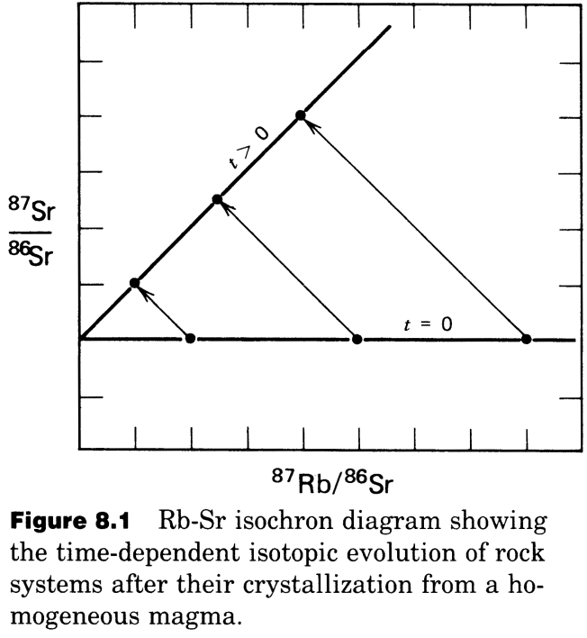
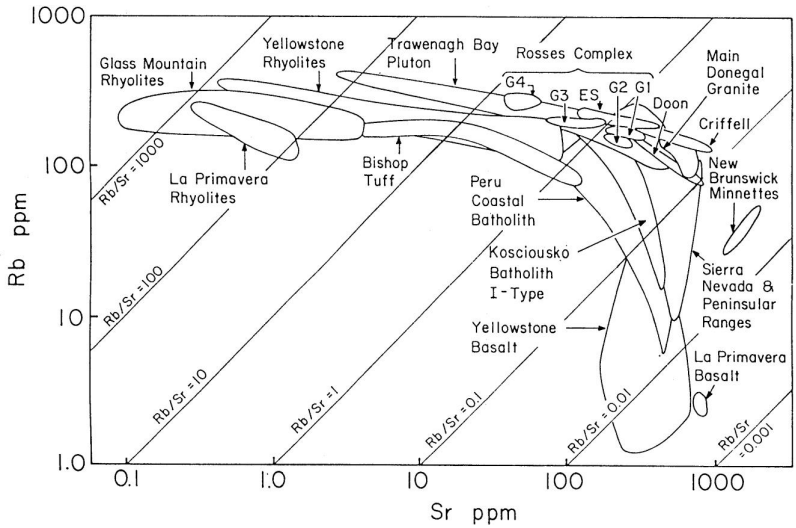
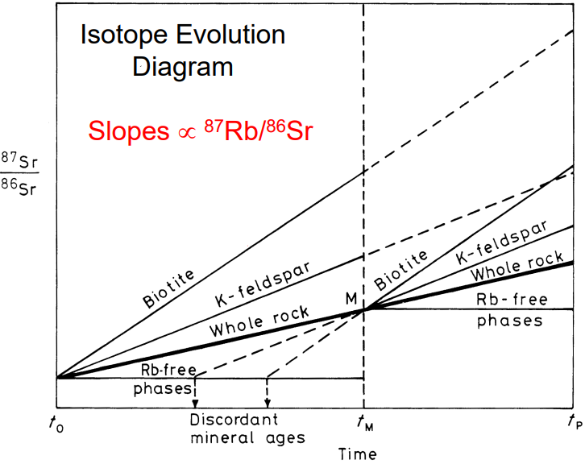

Rb-Sr Decay
Contents
Rb-Sr Decay#
# import relevant modules
%matplotlib inline
import numpy as np
import matplotlib.pyplot as plt
import pandas as pd
from IPython.display import display
from math import log10, floor
# create our own functions
# function to round a value to a certain number of significant figures
def round_to_n_sf(value, no_of_significant_figures):
value_rounded = round(value, no_of_significant_figures-1-int(floor(log10(abs(value)))))
return value_rounded
Rb-Sr Decay System#
\(Rb\) (rubidium) and \(Sr\) (strontium) are trace elements in rocks and they generally occur in dispersed form.
In igneous, metamorphic, and sedimentary rocks of the continental and ocean crust, the \(Rb\) and \(Sr\) concentrations typically range from several ppm to several \(100\,ppm\).
In terms of availablility, \(Rb\) “follows” \(K\), and is enriched in micas, K-feldspar, and clay minerals, whereas \(Sr\) “follows” \(Ca\), and is enriched in plagioclase, carbonates, and apatite.
In terms of mobility, \(Sr\) is fairly and \(Rb\) is strongly fluid-mobile.
Applying the principles of radioactive dating#
Applying the principles of radioactive dating, the basic decay equation for the Rb-Sr system can be expressed as:
In practice, isotope ratios can be determined much more precisely and accurately than absolute abundances (= concentrations). The abundances of the radiogenic daughter and the radioactive parent are therefore measured relative to a stable non-radiogenic daughter isotope, in this case \(^{86}Sr\):
We wish to obtain information on \(t\), which denotes the age of a sample. What information do we have or need to obtain, to determine \(t\)?
The decay constant \(\lambda\) is known accurately.
The \(^{87}Sr/^{86}Sr\) ratio can be determined by mass spectrometry.
The \(^{87}Rb/^{86}Sr\) ratio is proportional to \(Rb/Sr\). The \(Rb/Sr\) ratio of a sample can be determined in various ways (XRF, ICP-MS,…)
The initial ratio \((^{87}Sr/^{86}Sr)_0\) is unknown
However, to get around the problem of the unknown initial \(Sr\) isotope composition \((^{87}Sr/^{86}Sr)_0\), geochemists analyze two or more cogenetic samples, for example several minerals or whole-rock samples that originally formed from an isotopically homogeneous magma.
For igneous rocks and minerals which formed from such a magma, we can assume:
All minerals crystallized at (nearly) the same time.
All minerals have the same initial ratio of \((^{87}Sr/^{86}Sr)_0\), due to the isotopic homogenization of the magma.
\(Rb\) and \(Sr\) have different geochemical properties. Some minerals will thus preferentially incorporate \(Rb\) (e.g., micas) and others \(Sr\) (e.g. plagioclase). As a result, the minerals will show variable \(^{87}Rb/^{86}Sr\). This is the principle of trace element fractionation.
Such a system can be readily visualized. In the example below, there are 3 minerals that crystallized from the melt. They started off with identical \(Sr\) isotope compositions and variable \(^{87}Rb/^{86}Sr\) ratios. After some time (and radioactive decay), \(^{87}Sr/^{86}Sr\) has increased due to decay of \(^{87}Rb\) to \(^{87}Sr\). The mineral with the highest \(^{87}Rb/^{86}Sr\) ratio then displays the highest (most radiogenic) \(^{87}Sr/^{86}Sr\) ratio.

Remember the equation:
This has the form \(y = b + mx\) where
\(y = {^{87}Sr}/^{86}Sr\)
\(b =\) y-intercept \(=({^{87}Sr}/^{86}Sr)_0\)
\(m =\) slope \(= e^{\lambda t} - 1\)
\(x = {^{87}Rb}/^{86}Sr\)
We can utilize this algebra to evaluate the isochron diagram.
Conditions for successful dating with the isochron method:
Isotopic equilibrium/homogenization at \(t = 0\)
Closed system behavior from \(t = 0\) until the present day
Precise age data requires sufficient trace element fractionation between the samples. In other words, a large spread in parent/daughter ratios is desirable.
The equation above provides more than just the basis of geochronology. It is also the foundation for many other important applications of radioactive decay systems in geochemistry. The equation points out that the isotope composition of a sample reflects the time-integrated parent/daughter ratio of a given system. Various systems (crust, mantle, etc.) have distinct isotope compositions that reflect their time-integrated parent daughter ratios, which in turn reflect their geochemical evolution. Therefore, isotopes can be used to study the geochemical evolution of a particular source/reservoir, or they can be used to trace the involvement of a particular source/reservoir in a given process.
Dating of Terrestrial Rocks#
The \(Rb\)-\(Sr\) system was one of the first decay systems to be widely used in isotope geochemistry. It is particularly useful for dating felsic igneous and metamorphic rocks of the continental crust. Mantle-derived mafic and ultramafic rocks have low \(Rb/Sr\) ratios, so they are difficult to date well with the \(Rb\)-\(Sr\) decay system.
Igneous differentiation is associated with increasing \(Rb/Sr\) ratios when \(Sr\) is removed from the melt by the crystallization of plagioclase whilst \(Rb\) remains in the melt. Suites of differentiated igneous rocks therefore tend to have increasing \(Rb/Sr\) ratios with increasing degree of differentiation. As a result, acidic rocks often have variable and generally high \(Rb/Sr\) ratios of >1 (\({^{87}Rb}{^{86}Sr}>\,\sim2.9\)). Such rocks, and their metamorphic equivalents are therefore, in principle, well suited for dating with the \(Rb\)-\(Sr\) system. \(Sr\) and particularly \(Rb\) are fluid-mobile elements, leading to complications in Rb/Sr dating can arise from (even) low-temperature aqueous alteration of the samples. The figure below shows \(Rb\) vs. \(Sr\) concentrations for various mafic, intermediate, and acidic igneous rocks. Igneous differentiation generates magmas with high \(Rb\) contents combined with high \(Rb/Sr\) ratios, and low \(Sr\) concentrations (fractionation of plagioclase).

Dating of Igneous Rocks#
In principle, two techniques can be used to date igneous rocks with the \(Rb\)-\(Sr\) isochron method.
A mineral isochron can be determined, which uses various minerals (with a range of \(Rb/Sr\) ratios) that are separated from of a single large whole-rock sample.
A whole-rock isochron can be determined, which is based on results obtained for several large (about kg-sized) cogenetic whole-rock specimens that display a reasonable range of \(Rb/Sr\) ratios.
The whole-rock method is generally preferred and considered to provide reliable igneous formation ages because large whole rock samples are much less susceptible to isotopic resetting by regional or contact metamorphism than mineral separates.
Dating of Metamorphic Rocks#
Metamorphism can have a profound effect on the parent-daughter relationships of all isotopic decay systems, without necessarily being reflected in the mineralogy or texture of a rock. The \(Rb\)-\(Sr\) system is particularly sensitive to such reactions due to the mobility of \(Rb\) and \(Sr\) in (metamorphic) fluids. If the metamorphic fluids in the rock remain static, the released elements (here \(Rb\) and \(Sr\)) will be taken up by the nearest phase that can accommodate them.
The figure below is an isotope evolution diagram over time from protolith formation to present-day.

The isotopic evolution of a metamorphic rock can be described step-by-step as follows.
Formation of a rock and its mineral phases biotite, K-feldspar, and \(Rb\)-free apatite at \(t_0\).
Radiogenic ingrowth of \(^{87}Sr\) occurs until \(t_M\), when there is a metamorphic event
The metamorphism at \(t_M\) is strong enough to fully re-equilibrate all minerals, resulting in isotopic homogenization. The isotope composition of the whole rock remains unchanged if the sample is large enough to act as a closed system.
The metamorphic event is over and the system cools. Isotopic closure occurs when the temperature is too low for diffusion. New radiogenic ingrowth of \(^{87}Sr\), from \(t_M\) until \(t_P\), then again generates minerals with variable \({^{87}Sr}/{^{86}Sr}\), depending on the \(Rb/Sr\) ratio.
The minerals of a single whole rock sample will define a mineral isochron that provides the age of metamorphism. Several whole rock samples which act as closed systems and that have variable \({^{87}Rb}/{^{86}Sr}\) will define a whole rock isochron that provides the age of protolith crystallization.
Model ages#
Model ages (\(t_{model}\)) are obtained by extending the isotope evolution line of a sample (mineral) back to its initial Sr isotope composition using the measured \({^{87}Rb}/{^{86}Sr}\) ratio, but a drawback is that the initial \(Sr\) isotope composition must either be know or assumed/estimated.
Mathematically, \(Sr\) isotope model ages can be calculated using the known or estimated value of \(({^{87}Sr}/{^{86}Sr})_0\) by re-arranging the general decay equation:
In our example, the model ages calculated for the minerals relative to the initial \({^{87}Sr}/{^{86}Sr}\) at \(t_0\), yield incorrect and discordant results. Discordant means that different ages are obtained for different mineral phases.
Problem Set 4 - Question 2#
A very old basaltic lunar rock with an age of about \(4.47\,Gyr\) has a present-day \(Sr\) isotope composition of \({^{87}Sr}/{^{86}Sr} = 0.70105\). If the formation of the Moon occurred \(4.47\,Gyr\) ago with an initial \({^{87}Sr}/{^{86}Sr}\) of \(0.69897\), calculate the \({^{87}Rb}/{^{86}Sr}\) ratio of the lunar interior from which the rock was derived. The bulk Earth has a \({^{87}Rb}/{^{86}Sr}\) ratio of about \(0.085\) (equivalent to \(Rb/Sr = 0.03\)). Speculate why the Earth and Moon (as characterized by the lunar interior that was sampled by the lunar basalt) may be so different in their \({^{87}Rb}/{^{86}Sr}\) ratios.
Recall the Rb-Sr decay equation:
We can rearrange the equation to find \(\frac{^{87}Rb}{^{86}Sr}\).
# Rb-Sr decay equation
# each return depends on what we want to find from the equation
def Rb_Sr_decay_equation(Sr87_Sr86_ratio, initial_Sr87_Sr86_ratio, Rb87_Sr86_ratio, t):
decay_const_Rb = 1.42 * 10**-11 # yr^-1 # decay constant of Rb-87
if Sr87_Sr86_ratio == '?':
return initial_Sr87_Sr86_ratio + Rb87_Sr86_ratio*(np.exp(decay_const_Rb*t)-1)
elif initial_Sr87_Sr86_ratio == '?':
return Sr87_Sr86_ratio - Rb87_Sr86_ratio*(np.exp(decay_const_Rb*t)-1)
elif Rb87_Sr86_ratio == '?':
return (Sr87_Sr86_ratio - initial_Sr87_Sr86_ratio)/(np.exp(decay_const_Rb*t)-1)
t = 4.47 * 10**9 # yr
Sr87_Sr86_ratio = 0.70105 # present-day Sr87/Sr86 ratio
initial_Sr87_Sr86_ratio = 0.69897 # initial Sr87/Sr86 ratio
Rb87_Sr86_ratio = Rb_Sr_decay_equation(Sr87_Sr86_ratio, initial_Sr87_Sr86_ratio, '?', t) # we don't know Rb87/Sr86 ratio
# print answer
print("The Rb-87/Sr-86 ratio of the lunar interior from which the rock was derived is %g." % round_to_n_sf(Rb87_Sr86_ratio, 3))
The Rb-87/Sr-86 ratio of the lunar interior from which the rock was derived is 0.0317.
Problem Set 4 - Question 3#
Burton and O’Nions (Contrib. Min Petrol. 106: 66-89 [1990]) analyzed amphibolites from Sri Lanka. For one amphibolite and its mineral separates, they obtained the following results for the \(Rb\)-\(Sr\) isotope system (see the dataframe below).
Plot the data in a \({^{87}Sr}/{^{86}Sr}\) vs. \({^{87}Rb}/{^{86}Sr}\) isochron diagram and draw a best-fit isochron through the points. Scale your y-axis, such that \({^{87}Sr}/{^{86}Sr} = 0.714\) to \(0.736\) and your x-axis, such that \({^{87}Rb}/{^{86}Sr} = 0\) to \(3\).
What age does the isochron imply and what is the initial \({^{87}Sr}/{^{86}Sr}\)?
# create a dataframe to show the obtained results
samples = ["220-1 plagioclase", "220-1 amphibole", "220-1 whole-rock", "220-1 K-feldspar"]
Rb87_Sr86_ratio = [0.024, 1.479, 2.049, 2.601]
Sr87_Sr86_ratio = [0.71627, 0.72635, 0.73022, 0.73412]
dict1 = {'Samples' : samples,
'$${^{87}Rb}/{^{86}Sr}$$' : Rb87_Sr86_ratio,
'$${^{87}Sr}/{^{86}Sr}$$' : Sr87_Sr86_ratio}
df1 = pd.DataFrame(dict1)
df1.loc[:, '$${^{87}Rb}/{^{86}Sr}$$'] = df1['$${^{87}Rb}/{^{86}Sr}$$'].map('{:.3f}'.format)
df1.loc[:, '$${^{87}Sr}/{^{86}Sr}$$'] = df1['$${^{87}Sr}/{^{86}Sr}$$'].map('{:.5f}'.format)
display(df1.style.hide_index())
| Samples | $${^{87}Rb}/{^{86}Sr}$$ | $${^{87}Sr}/{^{86}Sr}$$ |
|---|---|---|
| 220-1 plagioclase | 0.024 | 0.71627 |
| 220-1 amphibole | 1.479 | 0.72635 |
| 220-1 whole-rock | 2.049 | 0.73022 |
| 220-1 K-feldspar | 2.601 | 0.73412 |
# set figure size
plt.figure(figsize=(8,6))
# Plot data points
plt.plot(Rb87_Sr86_ratio, Sr87_Sr86_ratio, 'bo', label="Data points")
# plot isochron by fitting a polynomial degree 1 - ie a straight line.
poly_coeffs=np.polyfit(Rb87_Sr86_ratio, Sr87_Sr86_ratio, 1)
p1 = np.poly1d(poly_coeffs)
slope = poly_coeffs[0] # e^(\lambda t) - 1
y_intercept = poly_coeffs[1] # initial Sr87/Sr86 ratio
x = np.linspace(0, 3, 10) # Rb87/Sr86 ratio
plt.plot(x, p1(x), 'b', label="linear fit ($y = %gx + %g$)" % (round_to_n_sf(slope, 3), round_to_n_sf(y_intercept, 3)))
# label and title the plot
plt.xlabel('${^{87}Rb}/{^{86}Sr}$')
plt.ylabel('${^{87}Sr}/{^{86}Sr}$')
plt.title('Isochron plot', fontsize=14)
plt.legend(loc='best', fontsize=10)
<matplotlib.legend.Legend at 0x20bdcf4ce80>
Now we have already got the slope (\(m\)) and y-intercept (\(b\)) of the isochron, so we can estimate the age (\(t\)) and initial \(Sr\)-\(87/Sr\)-\(86\) ratio (\(({^{87}Sr}/{^{86}Sr})_0\)) since
decay_const_Rb = 1.42 * 10**-11 # yr^-1 # decay constant of Rb-87
t = (1/decay_const_Rb) * np.log(slope + 1) # age
b = y_intercept # initial Sr-87/Sr-86 ratio
# print answers
print("The age implied by the isochron is %.2e yr." % t)
print("The initial Sr-87/Sr-86 ratio is %.3f." % b)
The age implied by the isochron is 4.85e+08 yr.
The initial Sr-87/Sr-86 ratio is 0.716.
References#
Lecture slide and Practical for Lecture 4 of the High-Temperature Geochemistry module